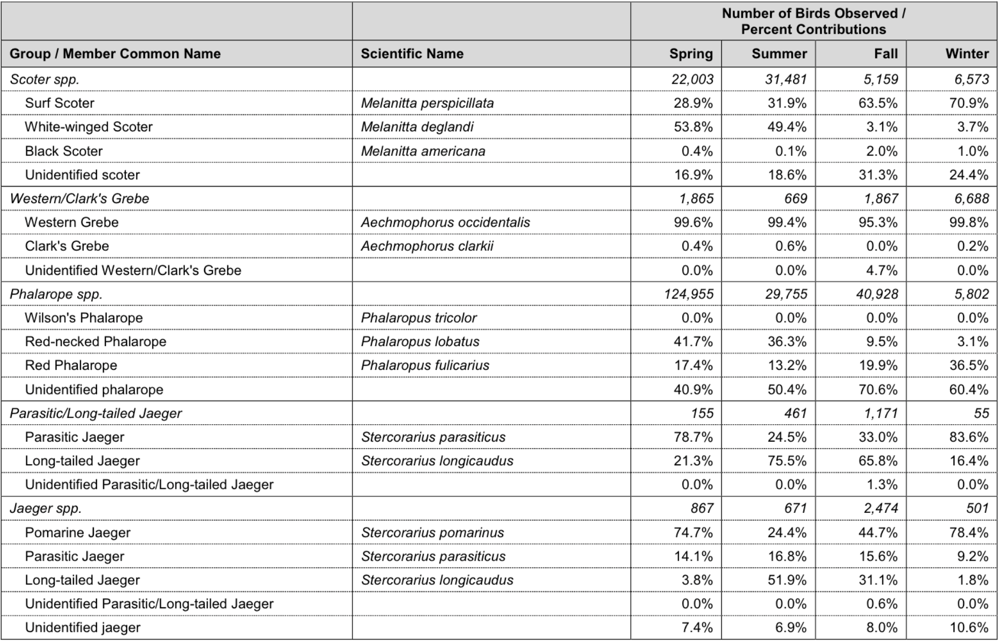
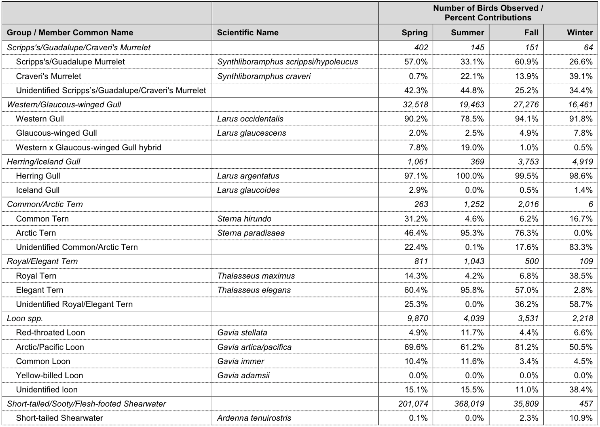
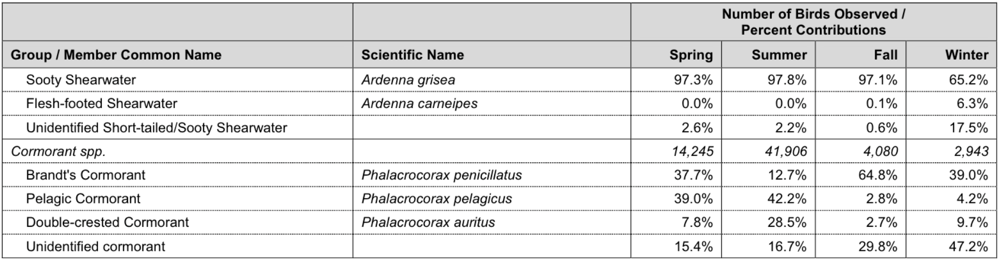
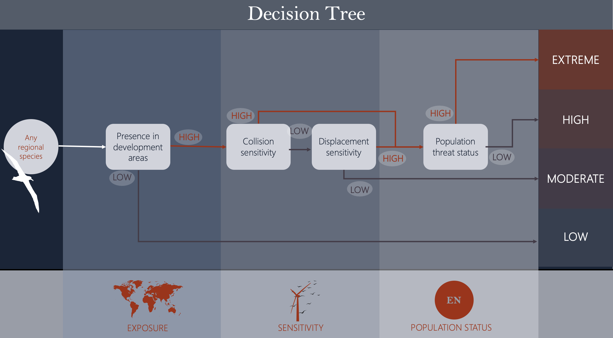

| Species | CCS Exposure | Collision Sensitivity | Displacement Sensitivity | IUCN Status |
|---|---|---|---|---|
| Wilson's Phalarope | 0.2584301 | NA | NA | LC |
| Short-tailed Shearwater | 0.5464738 | 0.0000583 | 0.2486842 | LC |
| Flesh-footed Shearwater | 0.5464738 | 0.0001166 | 0.2907895 | NT |
| Arctic Loon | 0.1581545 | NA | NA | LC |
| Common Tern | 0.2641415 | 0.1137291 | 0.3526316 | LC |
| Royal Tern | 0.1592503 | 0.1137291 | NA | LC |
| Horned Puffin | NA | 0.0000583 | 0.5855263 | LC |
| Parakeet Auklet | NA | 0.0083985 | 0.8236842 | LC |
| Common Merganser | NA | 0.0398344 | 0.7315789 | LC |
| Red-breasted Merganser | NA | 0.0452000 | 0.7315789 | LC |
| Horned Grebe | NA | 0.0092150 | 0.4184211 | VU |
| Long-tailed Duck | NA | 0.0341771 | 0.7315789 | VU |
| Least Storm-Petrel | NA | 0.0343520 | 0.4105263 | LC |
| Gull-billed Tern | NA | 0.0681792 | 0.4750000 | LC |
| Black Tern | NA | 0.0681792 | 0.4750000 | LC |
| Wilson's Storm-Petrel | NA | 0.0359851 | 0.4105263 | LC |
| American White Pelican | NA | 0.0645048 | NA | LC |
| Manx Shearwater | NA | 0.0023329 | 0.2302632 | LC |
Species Prioritization Weight Testing
The point of this document is to explain each of the steps of the species prioritization framework for the California Current Ecosystem. This document is in progress.
Step 1 - Selecting species present in the region to include
A literature review was performed to compile a list of all birds found regularly in the region. The initial list was acquired by combining the list from Kelsey et al. (2018) (detailed methods on the list formation can be found in Adams et al., 2016), which identified 81 regional marine bird species in the California Current System, with the list of species modeled by Leirness et al., 2021. The list was then refined according to the following additional criteria:
The updated vulnerability index from Kelsey et al (in prep) includes eight additional species due to range shifts and taxonomic updates. We have followed suit and included these species here:
Masked Booby, Sula dactylatra
Nazca Booby, Sula granti
Blue-footed Booby, Sula nebouxii
Brown Booby, Sula leucogaster
Red-footed Booby, Sula sula
Red-billed Tropicbird, Phaethon aethereus
Guadalupe Murrelet, Synthliboramphus hypoleucus
Townsend’s Storm-Petrel, Hydrobates socorroensis
Species that were considered to have 1% or less of their global population utilizing the CCS by Adams et al 2016 and Kelsey et al 2018 were considered for exclusion from this list, as a metric to exclude vagrants. I have selected the 1% cutoff is based on precedent for use in definitions of Birdlife International’s Important Bird Areas, the EU Natura 2000 Site Guidelines for Marine Habitats. It was also used in Desholm’s 2009 prioritization framework for research needs for migratory birds in wind farms. These applications are all for definition of important bird areas at much finer scales than what we’re discussing here, but as I am here recommending that the 1% criteria be used simply as a first step for eliminating vagrants from regional consideration, I believe that it functions in this application as a tool to identify whether the region is important to a species globally.
- For all species with <1% of global population estimated in the CCS, we performed literature review (primarily through the Cornell Birds of the World database) as a confirmation that the species is appropriate for exclusion. Local population estimates are frequently based on at-sea survey data that may be sufficient to identify certain types of important regional presence. Any species breeding in the CCS was included, even if local populations were small compared to global population sizes. Species known to have migratory pathways crossing the CCS were also included, as a precautionary measure given that brief periods of high bird presence during migration may be challenging to detect from at-sea survey data. Threatened species with poorly understood local area usage were also considered for inclusion.
Following the above steps, of the species that were considered in Leirness et al., 2021, Kelsey et al., 2018, and/or Kelsey et al., 2024, I opted to exclude the following species from this analysis for reasons described below:
Wilson’s Phalarope, Phalaropus tricolor (Kelsey et al., 2018, 2024: N, Leirness et al., 2021: Y)
- Not included in original Kelsey et al., vulnerability index as the species does not typically use pelagic habitats. A handful of records from at-sea surveys meant that the species was modeled in the joint “Phalarope” model by Leirness et al., 2021. Excluded here because of very low offshore habitat usage (CITE).
Short-tailed Shearwater, Ardenna tenuirostris (Kelsey et al., 2018, 2024: Y, Leirness et al., 2021: Y)
<1% of global population considered to be in CCS by Kelsey et al 2018
Included in joint Short-tailed, Flesh-footed, and Sooty Shearwater model by Leirness et al., 2021, based on low percentages of observations included in the model.
Excluded because while data on local distribution is poor and outdated, there is no local breeding of the species and no known important migratory route through the CCS, just low usage in the non-breeding season (CITE)..
Flesh-footed Shearwater, Ardenna carneipes (Kelsey et al., 2018, 2024: Y, Leirness et al., 2021: Y)
<1% of global population considered to be in CCS by Kelsey et al 2018
Included in joint Short-tailed, Flesh-footed, and Sooty Shearwater model by Leirness et al., 2021, based on low percentages of observations included in the model.
Excluded because while data on local distribution is poor and outdated, there is no local breeding of the species and no known important migratory route through the CCS, just low usage in the non-breeding season (CITE).
Arctic Loon, Gavia arctica (Kelsey et al., 2018, 2024: N, Leirness et al., 2021: Y)
- This was formerly a subspecies of Pacific Loon, and is therefore only included in Leirness et al., 2021 as an artifact of the timing of the split. The species does not use the CCS (CITE).
Common Tern, Sterna hirundo (Kelsey et al., 2018, 2024: Y, Leirness et al., 2021: Y)
<1% of global population considered to be in CCS by Kelsey et al 2018
Modeled as part of the Common Tern/Arctic Tern joint model by Leirness et al., 2021
No breeding populations in the CCS, and no documented important migratory routes through offshore region (CITE).
Royal Tern, Thalasseus maximus (Kelsey et al., 2018, 2024: Y, Leirness et al., 2021: Y)
<1% of global population considered to be in CCS by Kelsey et al 2018
Modeled as part of the Royal Tern/Elegant Tern joint model by Leirness et al., 2021
Breeds irregularly in Southern California, but primarily uses inshore habitat; not considered highly pelagic (CITE).
Horned Puffin, Fratercula corniculata (Kelsey et al., 2018, 2024: Y, Leirness et al., 2021: N)
<1% of global population considered to be in CCS by Kelsey et al 2018
Spend non-breeding season partially in pelagic CCS but not believed to overlap with the CCS in large numbers (CITE)
Parakeet Auklet, Aethia psittacula (Kelsey et al., 2018, 2024: Y, Leirness et al., 2021: N)
<1% of global population considered to be in CCS by Kelsey et al 2018
Spend non-breeding season partially in pelagic CCS but not believed to overlap with the CCS in large numbers (CITE)
Common Merganser, Mergus merganser (Kelsey et al., 2018, 2024: Y, Leirness et al., 2021: N)
<1% of global population considered to be in CCS by Kelsey et al 2018
Primarily use inshore and immediate coastal habitat (CITE).
Red-breasted Merganser, Mergus serrator (Kelsey et al., 2018, 2024: Y, Leirness et al., 2021: N)
<1% of global population considered to be in CCS by Kelsey et al 2018
Primarily use inshore and immediate coastal habitat (CITE).
Horned Grebe, Podiceps auritus (Kelsey et al., 2018, 2024: Y, Leirness et al., 2021: N)
<1% of global population considered to be in CCS by Kelsey et al 2018
Primarily use inshore and immediate coastal habitat (CITE).
Long-tailed Duck, Clangula hyemalis (Kelsey et al., 2018, 2024: Y, Leirness et al., 2021: N)
- <1% of global population considered to be in CCS by Kelsey et al 2018
Least Storm-Petrel, Hydrobates microsoma (Kelsey et al., 2018, 2024: Y, Leirness et al., 2021: N)
<1% of global population considered to be in CCS by Kelsey et al 2018
Occasionally found offshore as far north as central California in late summer but vast majority of population is in Gulf of California (CITE).
Gull-billed Tern, Gelochelidon nilotica (Kelsey et al., 2018, 2024: Y, Leirness et al., 2021: N)
<1% of global population considered to be in CCS by Kelsey et al 2018
Primarily uses inshore habitat (CITE).
Black Tern, Chlidonias niger (Kelsey et al., 2018, 2024: Y, Leirness et al., 2021: N)
<1% of global population considered to be in CCS by Kelsey et al 2018
Primarily uses inshore habitat, not found offshore in CCS (CITE).
Wilson’s Storm-Petrel, Oceanites oceanicus (Kelsey et al., 2018, 2024: Y, Leirness et al., 2021: N)
<1% of global population considered to be in CCS by Kelsey et al 2018
Uncommonly found in CCS in non-breeding season (CITE).
American White Pelican, Pelecanus erythrorhynchos (Kelsey et al., 2018, 2024: Y, Leirness et al., 2021: N)
<1% of global population considered to be in CCS by Kelsey et al 2018
Not found in offshore habitat (CITE).
Manx Shearwater, Puffinus puffinus (Kelsey et al., 2018, 2024: Y, Leirness et al., 2021: N)
<1% of global population considered to be in CCS by Kelsey et al 2018
Doesn’t breed in region, only rarely found offshore (CITE).
The following table shows the exposure values, sensitivity values, and IUCN statuses for these species. Exposure and sensitivity values are each re-scaled to 1 such that values close to zero represent a species with particularly low values in the dataset and values close to 1 represent species with particularly high values in the dataset.
The following species were included in the analysis despite a global population overlap with the CCS estimated by Kelsey et al., 2018 to be <1%, for the reasons stated:
Hawaiian Petrel, Pterodroma sandwichensis (Kelsey et al., 2018, 2024: Y, Leirness et al., 2021: N)
- Included to be precautionary because of endangered IUCN status and an abundance of eBird sightings in recent years (CITE).
Fork-tailed Storm-Petrel, Hydrobates furcatus (Kelsey et al., 2018, 2024: Y, Leirness et al., 2021: Y)
- Included because the species breeds in the CCS (CITE).
Parasitic Jaeger, Stercorarius parasiticus (Kelsey et al., 2018, 2024: Y, Leirness et al., 2021: Y)
- Understood to migrate through the CCS, but limited research on movement and abundance data throughout the region (CITE) - included to be precautionary as migratory movements may be challenging to pick up in at-sea survey data.
Long-tailed Jaeger, Stercorarius longicaudus (Kelsey et al., 2018, 2024: Y, Leirness et al., 2021: Y)
- Understood to migrate through the CCS, but limited research on movement and abundance data throughout the region (CITE) - included to be precautionary as migratory movements may be challenging to pick up in at-sea survey data.
Black Storm-Petrel, Hydrobates melania (Kelsey et al., 2018, 2024: Y, Leirness et al., 2021: Y)
- Included because the species breeds in the CCS (CITE).
Laysan Albatross, Phoebastria immutabilis (Kelsey et al., 2018, 2024: Y, Leirness et al., 2021: Y)
- Included precautionarily given breeding population on Guadalupe Island and given proposed translocation to establish breeding colonies on the Channel Islands (Raine et al., 2022)
The following table shows the exposure values, sensitivity values, and IUCN statuses for these species. Again, exposure and sensitivity values are each re-scaled to 1 such that values close to zero represent a species with particularly low values in the dataset and values close to 1 represent species with particularly high values in the dataset.
| Species | CCS Exposure | Collision Sensitivity | Displacement Sensitivity | IUCN Status |
|---|---|---|---|---|
| Fork-tailed Storm-Petrel | 0.1674524 | 0.0357518 | 0.2723684 | LC |
| Parasitic Jaeger | 0.3040632 | 0.0803103 | 0.0223684 | LC |
| Long-tailed Jaeger | 0.3040632 | 0.0899335 | 0.0223684 | LC |
| Black Storm-Petrel | 0.2077543 | 0.0343520 | 0.3407895 | LC |
| Laysan Albatross | 0.0077220 | 0.0613554 | 0.0855263 | NT |
| Hawaiian Petrel | NA | 0.0041992 | 0.3157895 | EN |
Step 2 - Getting values for exposure, sensitivity, and threat
Exposure
The Leirness et al. (2021) species distribution maps of seabirds on the Pacific Outer Continental Shelf region were produced by season when enough data was present for a given species and season to produce a raster map with an estimate of density per km^2 grid cell. To assess exposure over the course of the entire year, I have combined the models for each season available (assuming a zero presence in seasons not modeled) into an annual model. I then overlay the vector outlines of the wind energy areas under consideration and calculate what proportion much of the summed regional density is found within the development zones. Based on the way that the models are produced and the seasons are combined, this answer cannot be used to predict an actual number of individuals in any given grid cell, but can instead be interpreted as “In seasons that a species is present in the Pacific Outer Continental Shelf region, what proportion of the use of the region for that species overlaps with the development areas”.
Based on the size of the lease areas compared to the overall region (i.e., ~.159% of the POCS region modeled is within wind energy areas), these numbers are typically very small (i.e., the highest exposure value in the dataset is ~0.8% overlap with the development areas, for a Pink-Footed Shearwater).
Here is a complete list of the models produced by season. Some species were modeled in species groups instead of as individual species:
| Model Name | Spring | Summer | Fall | Winter |
|---|---|---|---|---|
| Ancient Murrelet | Y | N | N | N |
| Ashy Storm-Petrel | Y | Y | Y | N |
| Black-footed Albatross | Y | Y | Y | Y |
| Black-legged Kittiwake | Y | N | Y | Y |
| Black Storm-Petrel | Y | Y | Y | N |
| Bonaparte's Gull | Y | N | Y | Y |
| Brandt's Cormorant | Y | Y | N | N |
| Brown Pelican | Y | Y | Y | Y |
| Buller's Shearwater | N | Y | Y | N |
| Black-vented Shearwater | Y | N | Y | Y |
| Cassin's Auklet | Y | Y | Y | Y |
| California Gull | Y | Y | Y | Y |
| Caspian Tern | Y | Y | N | N |
| Common Loon | Y | Y | N | N |
| Common Murre | Y | Y | Y | Y |
| Cook's Petrel | Y | Y | Y | N |
| Cormorant spp. | N | N | Y | Y |
| Common/Arctic Tern | Y | Y | Y | N |
| Double-crested Cormorant | Y | Y | N | N |
| Fork-tailed Storm-Petrel | Y | Y | Y | Y |
| Heermann's Gull | N | Y | Y | Y |
| Herring/Iceland Gull | Y | Y | Y | Y |
| Jaeger spp. | Y | Y | Y | Y |
| Laysan Albatross | Y | N | N | Y |
| Leach's Storm-Petrel | Y | Y | Y | Y |
| Loon spp. | Y | Y | Y | Y |
| Marbled Murrelet | Y | Y | N | N |
| Murphy's Petrel | Y | N | N | N |
| Northern Fulmar | Y | Y | Y | Y |
| Parasitic/Long-tailed Jaeger | Y | Y | Y | N |
| Pelagic Cormorant | Y | Y | N | N |
| Pink-footed Shearwater | Y | Y | Y | N |
| Phalarope spp. | Y | Y | Y | Y |
| Pigeon Guillemot | Y | Y | N | N |
| Pomarine Jaeger | Y | Y | Y | Y |
| Rhinoceros Auklet | Y | Y | Y | Y |
| Royal/Elegant Tern | Y | Y | Y | N |
| Red-throated Loon | Y | Y | N | N |
| Sabine's Gull | Y | Y | Y | N |
| Scripp's/Guadalupe/Craveri's Murrelet | Y | N | N | N |
| Scoter spp. | Y | Y | Y | Y |
| South Polar Skua | N | N | Y | N |
| Short/Tailed/Sooty/Flesh-footed Shearwater | Y | Y | Y | Y |
| Tufted Puffin | Y | Y | N | N |
| Western/Clark's Grebe | Y | N | Y | Y |
| Western/Glaucous-winged Gull | Y | Y | Y | Y |
Observations of some species that were used to produce individual models were also used to create grouped models in some cases, particularly in the case of species groups with high numbers of unidentified observations:
“To the extent possible, species-specific models were developed. However, identification uncertainty for some species, mainly from visual aircraft-based surveys, may have increased the probability of species misidentification and also resulted in a greater proportion of observations not identified to species. Therefore, for some species, species-specific observations (e.g., Surf Scoter [Melanitta perspicillata]) were combined with species-nonspecific observations (e.g., unidentified scoter) to create broad taxonomic groups prior to modeling. Thirteen taxonomic groups were identified. In these cases, taxonomic group models were developed in place of individual species-level models. However, individual species models were developed in addition to taxonomic group models for Pomarine Jaeger (Stercorarius pomarinus), Red-throated Loon (Gavia stellata), and Common Loon (Gavia immer). Individual cormorant species models were developed for spring and summer seasons, when breeding plumage allowed species to be more easily distinguished. All cormorant observations were combined into a single taxonomic group for fall and winter season models.” - Leirness et al., 2021
The tables below, copied from this report, outline the proportions of each grouped model that were made up of each species by season.



Because our framework relies on treating each species individually given species-specific collision/displacement sensitivity scores and IUCN statuses, I have attempted to select the most appropriate model to use for each species, and intend to report on the caveats of each. Unfortunately, because densities cannot be compared across models, mixing models by season (e.g., using the Double-crested Cormorant model for Spring and Summer and supplementing with the Cormorant spp. model for Fall and Winter) is not a feasible approach.
Sooty Shearwater - used the Short-tailed/Sooty/Flesh-footed Shearwater model. This is effectively a Sooty Shearwater model in all seasons with a bit more messiness in the winter.
Pomarine Jaeger - This is the most abundant jaeger in the POCS, and was modeled separately for each season in addition to its observations being included in the grouped model given the high number of unidentified jaeger observations. I used the independent Pomarine Jaeger model.
Parasitic Jaeger - Given the high number of unidentified jaeger observations, observations of Parasitic Jaegers are modeled as a unit with Long-tailed Jaegers for all seasons and also used in the Jaeger spp. model. I’m using the Parasitic/Long-tailed Jaeger model here. Parasitic Jaegers are more abundant in the Spring and Winter models where overall jaeger observations are lower, and less abundant than Long-tailed Jaeger observations in the Summer and Fall, so this model is likely more representative of Long-tailed Jaeger distribution than Parasitic Jaeger abundance. This model is not produced for the Winter season, but observations in the Jaeger model are dominantly of Pomarine Jaegers.
Long-tailed Jaeger - I am using the Parasitic/Long-tailed Jaeger model here, which is likely more representative of Long-tailed Jaeger distribution than Parasitic (see above)
Herring Gull - I am using the Herring/Iceland Gull group model here. This model is almost entirely representative of Herring Gull distribution in all seasons.
Iceland Gull - I am using the Herring/Iceland Gull group model here. This model is almost entirely representative of Herring Gull distribution in all seasons. eBird observations appear to be potentially more concentrated in coastal areas for Iceland Gulls than for Herring Gulls, so this estimate may be precautionary.
Arctic Tern - I am using the Common/Arctic Tern model here. This model is majorly composed of Arctic Tern observations, though it contains more moderate numbers of Common Terns in the Spring season. Common Terns are not included in this framework for the reasons listed in section 1 of this overview.
Red-necked Phalarope - I am using the Phalarope spp. model here. Red Phalaropes and Red-necked Phalarope observations are both abundant in this model with high proportions of unidentified observations for each season. Wilson’s Phalaropes are not included in this framework for the reasons listed in section 1 of this overview. eBird observations for the two species appear similarly distributed.
Red Phalarope - I am using the Phalarope spp. model here. Red Phalaropes and Red-necked Phalarope observations are both abundant in this model with high proportions of unidentified observations for each season. Wilson’s Phalaropes are not included in this framework for the reasons listed in section 1 of this overview. eBird observations for the two species appear similarly distributed.
Scripp’s Murrelet - I am using the Scripp’s/Guadalupe/Craveri’s Murrelet model for all three of these species. Based on the recent split between Scripp’s and Guadalupe Murrelets and the high proportions of unidentified murrelet observations in the model it’s challenging to piece out how representative this model is of each species.
Guadalupe Murrelet - I am using the Scripp’s/Guadalupe/Craveri’s Murrelet model for all three of these species. Based on the recent split between Scripp’s and Guadalupe Murrelets and the high proportions of unidentified murrelet observations in the model it’s challenging to piece out how representative this model is of each species.
Craveri’s Murrelet - I am using the Scripp’s/Guadalupe/Craveri’s Murrelet model for all three of these species. Based on the recent split between Scripp’s and Guadalupe Murrelets and the high proportions of unidentified murrelet observations in the model it’s challenging to piece out how representative this model is of each species. eBird observations for the three species indicate that Craveri’s Murrelet distributions are concentrated in more southern regions of the POCS than Scripp’s and Guadalupe, indicating that this species may be a lower concern for call areas north of the Morro Bay area than is indicated by this group model.
Glaucous-winged Gull - I am using the Glaucous-winged/Western Gull model, but the model is primarily representative of Western Gull distribution in all seasons.
Western Gull - I am using the Glaucous-winged/Western Gull model, but the model is primarily representative of Western Gull distribution in all seasons.
Elegant Tern - I am using the Royal/Elegant Tern model - this model is dominantly composed of Elegant Tern observations across seasons. Royal Terns are not included in this framework for the reasons listed in section 1 of this overview.
Common Loon - I am using the Common Loon model, which is only produced for Spring and Summer. There are minimal observations of Common Loons in the Fall and Winter, so this is unlikely to sway the distribution of this species significantly.
Pacific Loon - I am using the Loon spp model, which is primarily composed of Pacific Loon observations in all seasons.
Yellow-billed Loon - I am using the Loon spp model, which is primarily composed of Pacific Loon observations in all seasons. There are very few observations of Yellow-billed Loons present in the model as this species is not very abundant in the POCS, so this is effectively more like using Pacific Loon distribution as a proxy for this species. There are extremely few eBird records for this species in pelagic waters in the POCS.
Red-throated Loon - I am using the Red-throated Loon model, which is only produced for Spring and Summer. There are minimal observations of Red-throated in the Fall and Winter, so this is unlikely to sway the distribution of this species significantly.
Double-crested Cormorant - I am using the Double-crested Cormorant model, which is only produced for Spring and Summer. Cormorants were modeled as a unit for all seasons alongside the Spring/Summer individual species models given high rates of unidentified observations in the non-breeding season. Double-crested Cormorants are not present in high numbers in the fall and winter seasons, so the Spring and Summer distributions may be broadly representative of their annual exposure to the wind areas.
Pelagic Cormorant - I am using the Pelagic Cormorant model, which is only produced for Spring and Summer. Cormorants were modeled as a unit for all seasons alongside the Spring/Summer individual species models given high rates of unidentified observations in the non-breeding season. Pelagic Cormorants are not present in high numbers in the fall and winter seasons, so the Spring and Summer distributions may be broadly representative of their annual exposure to the wind areas.
Brandt’s Cormorant - I am using the Brandt’s Cormorant model, which is only produced for Spring and Summer. Cormorants were modeled as a unit for all seasons alongside the Spring/Summer individual species models given high rates of unidentified observations in the non-breeding season. Brandt’s Cormorants are the dominant species in the Cormorant spp. model in the Fall and Winter seasons, but modeling the fall and winter seasons alone for the Cormorant spp. model produces a lower overlap for the entire region than modeling the Brandt’s model alone (0.00048 vs 0.0007) so using the Brandt’s model alone is the precautionary choice.
Western Grebe - I am using the Western/Clark’s Grebe model. This model is almost entirely composed of Western Grebe observations.
Clark’s Grebe - I am using the Western/Clark’s Grebe model. This model is almost entirely composed of Western Grebe observations, however, eBird observations of the two species appear similarly distributed though Clark’s Grebes are less abundant.
Surf Scoter - I am using the Scoter spp model for all scoters. This model is a significantly more composed of Surf and White-winged Scoter observations than it is of Black Scoter observations across seasons.
Black Scoter - I am using the Scoter spp model for all scoters. This model is a significantly more composed of Surf and White-winged Scoter observations than it is of Black Scoter observations across seasons.
White-winged Scoter - I am using the Scoter spp model for all scoters. This model is a significantly more composed of Surf and White-winged Scoter observations than it is of Black Scoter observations across seasons
Of the species that we consider regional, we don’t have species distribution models for the following species:
| Species | CCS Exposure | Collision Sensitivity | Displacement Sensitivity | IUCN Status |
|---|---|---|---|---|
| Brant | NA | 0.3961857 | 0.6592105 | LC |
| Harlequin Duck | NA | 0.0270034 | 0.8921053 | LC |
| Short-tailed Albatross | NA | 0.0614721 | 0.1868421 | VU |
| Townsend's Storm-Petrel | NA | 0.0299195 | 0.4618421 | EN |
| Forster's Tern | NA | 0.0881255 | 0.4750000 | LC |
| Ring-billed Gull | NA | 0.2908550 | 0.1500000 | LC |
| Short-billed Gull | NA | 0.2908550 | 0.2144737 | LC |
| Black Skimmer | NA | 0.0881255 | 0.7486842 | LC |
| Least Tern | NA | 0.0681792 | 0.4750000 | LC |
| Red-billed Tropicbird | NA | 1.0000000 | 0.2157895 | LC |
| Eared Grebe | NA | 0.0097399 | 0.4184211 | LC |
| Red-necked Grebe | NA | 0.0089817 | 0.4184211 | LC |
| Mottled Petrel | NA | 0.0024496 | 0.3671053 | NT |
| Hawaiian Petrel | NA | 0.0041992 | 0.3157895 | EN |
| Masked Booby | NA | 0.0319025 | 0.9605263 | LC |
| Nazca Booby | NA | 0.0343520 | 0.9605263 | LC |
| Blue-footed Booby | NA | 0.0343520 | 0.9605263 | LC |
| Brown Booby | NA | 0.0353435 | 0.9605263 | LC |
| Red-footed Booby | NA | 0.0645632 | 0.8657895 | LC |
For these species, I’m exploring using expert elicitation or phylogenetic imputation to generate estimate values of overlap and ranges of uncertainty.
Sensitivity
The vulnerability index for the POCS seabird species produced by Kelsey et al. (2018) is in the process of being updated to include new species and improve the metrics and formulas used to calculate collision and displacement vulnerability. I use the updated values here, where Collision Vulnerability is calculated as:
\[ CV = FA \times RZSt \times (1 - MA) \]
Where FA (Flight Activity) is a metric representing the amount of time a species spends in flight, RZSt (Time Spent in Rotorswept Zone) is a metric based on the flight height of a species, and MA (Macro-avoidance) represents the likelihood of a bird to avoid the wind farm.
And Displacement Vulnerability is calculated as:
\[ DV = MA \times HS \]
Where MA (Macro-avoidance) represents the likelihood of a bird to avoid the wind farm, and HS (Habitat Specificity) is a function of the reliance of a bird on particular habitats.
These formulas produce values for collision vulnerability that range from ~ 0.00 to 0.18, and displacement vulnerability that range from ~0.00 to 0.73.
Threat
For threat I am currently using strictly IUCN status for the sake of simplicity in developing this prototype version of the framework - see below for a description of the process to assign numeric values to the IUCN categories. I’m interested in exploring ways to build in other metrics of threat in later versions of the tool and happy to hear thoughts if you have any!
Step 3: Data cleaning and input options:
For ease of interpretation, and to ensure that the numbers interact with one another in the appropriate ways in the next step, the exposure values are rescaled from 0-1 (0.0001 is added to avoid the issue of the zero in the dataset) such that 1.0001 represents the species with the greatest overlap in distribution with the wind energy areas and 0.0001 represents the species with the least. The sensitivity values (both collision and displacement) are each rescaled such that the two metrics of sensitivity have the same range as one another so that the two values can then be combined according to user preference.
This tool is designed to be used iteratively to be able to consider priority species at different regional scales to allow for better regional planning of research and mitigation priorities. For that reason, I’ve built in options to run the tool for different subsets of the current lease areas. Users of the tool can elect to consider priority species when considering species overlap with all development areas in the POCS region, or go by state or individual lease area. The way that the math is set up behind the scenes is such that the species with the highest overlap with the development areas in the spatial scale selected will list out on top (exposure = 1.0001).
To allow flexibility of the application of the tool, the user also has the option to select the sensitivity values that they want to run the tool with. The default option (which will be presented in this manuscript case study for the POCS region) is the summed combination of the collision and displacement sensitivity when they’re weighted equally, however, the use may also select to work with either displacement or collision alone, or whichever value is highest.
Step 4 - Combining Values
Now we want a way to combine the metrics of Exposure, Sensitivity, and Threat as described above via a formula that produces a “priority value” for each species that can be used to evaluate species against one another. What we were working with before we transitioned to the formula approach was a decision tree approach, shown below:

Conceptually, we want the outcome of the formula to do something similar to what is delivered by the decision tree:
We want metrics to have different importance to the final ranking, i.e., in order for high sensitivity to collision to matter, the species has to first overlap in range with the development areas, and in order for a worse population status to matter with regard to wind energy impact, the species has to be at risk of impact (i.e., exposed and sensitive to risk).
We want a “low” sensitivity value to decrease the risk, and a high sensitivity value to increase it. The same should be true for threat status.
To do this, I have elected to use a product approach with the following formula:
\[ Priority = Exposure \times Sensitivity \times Threat \]
In order for this to formula work in accordance with the above goals for the tool, the numbers in each criteria have to be rescaled carefully. In the current tool, the numbers are rescaled according to the following criteria, for the reasons listed:
Exposure remains as a range from 0.0001 - 1.0001.
Sensitivity in the tool is rescaled such that the maximum value in the range is the inverse of the minimum value in the range, to ensure that the high and low extremes have the same proportional impact on the value.
For a numeric value to assign to each of the categories (LC, NT, VU, EN, CR), I’ve referred to Butchart et al., 2004, who assigned values to each based on the probability of extinction in each category and found that the extinction probability in each category changes approximately by a factor of 10, and thus assigns values to the categories as: LC = 0, NT = 0.0005, VU = 0.005, EN = 0.05, CR = 0.5. To set the values of threat such that a low threat decreases the priority value and a high threat increases it, NT in the tool is standardized at 1. A ten-fold difference between the values as described by Butchart weights the importance of threat far beyond that of exposure or sensitivity in the tool, so a lower fixed ratio between the values is recommended to standardize the importance of threat to be in line with the other components of the final priority ranking value.
For the purposes of this paper, I am using a fixed range of 1 for each of the metrics in the formula such that the range of each metric has an equivalent degree of impact on the outcome. Therefore the default in the shiny app is set to the weights that I intend to use for the paper: the sensitivity range is set from 0.618 to its inverse, 1.618, and the range of the threat values is set to 0.82 (for LC) to 1.82 (CR). In the publicly available version of the tool, users will have the option to edit the weights of each metric to give the tool flexibility in the cases of decision making contexts that may require exposure, sensitivity, or threat to be weighted differently.
To see the preliminary results of combining the values in this way and how they shift when the weights of the metrics are adjusted, see the R Shiny app here.